Is Sagging Skin After Bariatric Surgery Normal? {2026 Guide}
Is Sagging Skin After Bariatric Surgery Normal? {2026 Guide}
Read MorePractical guides, patient stories, and expert insights on bariatric surgery, weight loss recovery, metabolic health, and insurance coverage — straight from Dr. Atul Peters.

Is Sagging Skin After Bariatric Surgery Normal? {2026 Guide}
Read More
What are the 5 warning signs of a hernia? Learn to recognize visible bulges, strain heaviness, severe pain, nausea, strangulation red flags, and 8 FAQs by Dr. Atul Peters.
Read More
What is the 30 rule for bariatric surgery? Learn about the BMI 30 threshold for diabetes, 30-30 liquid rule, 30 chews per bite, and 8 FAQs by Dr. Atul Peters.
Read More
Is bariatric surgery safe? Learn safety statistics, mortality rates (<0.1%), robotic techniques, risk comparison vs severe obesity, and 8 FAQs by Dr. Atul Peters.
Read More
Can an umbilical hernia heal without surgery? Learn why adult hernia belts fail, risks of strangulation, and modern 3D mesh repairs by Dr. Atul Peters.
Read More
Can gallstones cause upper back or shoulder pain? Learn about referred biliary pain, ultrasound diagnosis, keyhole removal, and 8 FAQs by Dr. Atul Peters.
Read More
When can I start exercising after Bariatric Surgery?
Read More
How to Stop Hair Loss After Bariatric Surgery?
Read More
Can You Have Bariatric Surgery After a Heart Attack?
Read MoreIs Robotic Surgery Covered by Insurance? {2026 Guide}
Read More
Does Insurance Cover Gallbladder Surgery? {Key Insights}
Read More
Is Bariatric Surgery Covered by Insurance? {Key Facts}
Read More
How to Sleep After Gallbladder Surgery? {2026 Guide}
Read More

Can You Drink Alcohol After Bariatric Surgery?
Read More


When is Bariatric Surgery Recommended? {Doctor Guide}
Read More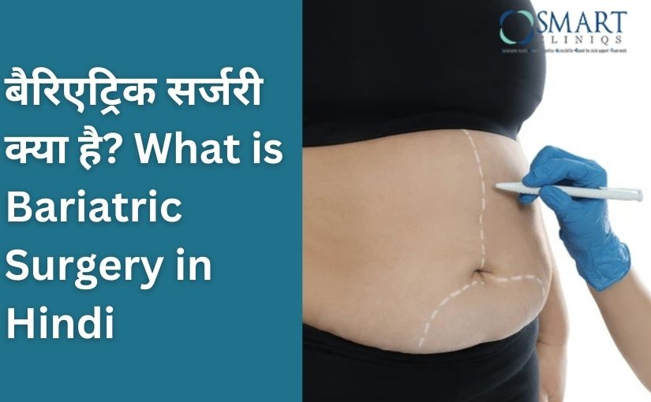
Bariatric Surgery Kya h | What is Bariatric Surgery in Hindi?
Read More

How Intra Gastric Balloon Work? {Complete Guide}
Read More
How Does Weight Loss Surgery Work? {Simple Guide}
Read More
How Long is Laparoscopic Gallbladder Surgery?
Read MoreHow Do You Lose Weight After Bariatric Surgery?
Read More
How Long Does It Take to Recover from Bariatric Surgery?
Read More
Can You Lose Weight After Gallbladder Surgery? {Detailed Guide}
Read More


Is Bariatric Surgery painful? {Doctor’s Guide}
Read More
How long does Laparoscopic Hernia Surgery take?
Read More

How does Bariatric Surgery reverse Diabetes? {Complete Guide}
Read More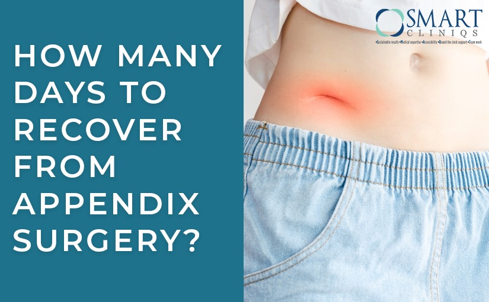
How many Days to Recover from Appendix Surgery?
Read More
How is Gallbladder Surgery Done? {Surgeon’s Guide}
Read More


Which Size of Gallbladder Stone is Dangerous? {A Complete Guide}
Read More
Can you Get a Hernia after Laparoscopic Surgery?
Read More
Is Gallbladder Stone Curable Without Surgery?
Read More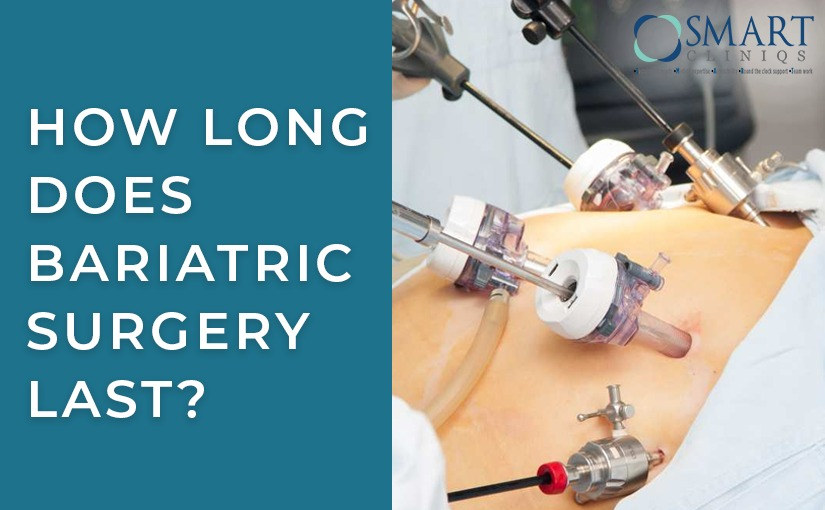
How long does Bariatric Surgery last? {A Detailed Guide}?
Read More

What to Eat after Inguinal Hernia Surgery?- Dr. Atul Peters
Read More
What are the Side Effects of Bariatric Surgery?
Read MoreCan Hernia Surgery Be Done Without General Anesthesia?
Read More
What are the three Types of Bariatric Surgery?
Read More
Can Hernia Surgery cause Erectile Dysfunction?
Read More
How quick is Recovery from Gallbladder Surgery?
Read More

What are the Guidelines for Metabolic Surgery?
Read More
How long is the Recovery from Hernia Surgery?
Read More
Advantages and Disadvantages of Robotic Surgery
Read More

Is Robotic Surgery Better for Inguinal Hernia?
Read More


How long does it take to prepare for Bariatric Surgery?
Read More


Robotic Gastric Sleeve: Advanced Precision for Effective Weight Management
Read More

Laparoscopic vs Robotic Cholecystectomy: Choosing the Right Approach for Gallstone Removal
Read More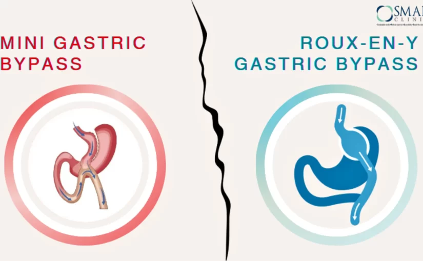
Mini Gastric Bypass vs Roux-en-Y Gastric Bypass
Read More
Delhi’s Top Robotic Surgeon for Weight Loss Surgery
Read More

How Metabolic Surgery Can Help Control Diabetes?
Read MoreFinding the Best Weight Loss Surgeon in Delhi
Read More
How Weight Loss Surgery Can Improve Your Health & Wellbeing
Read More
Navigating Bariatric Surgery With Laparoscopic and Robotic Techniques
Read More
Sleeve Gastrectomy Surgery: A Key to Better Health and Improved Quality of Life
Read More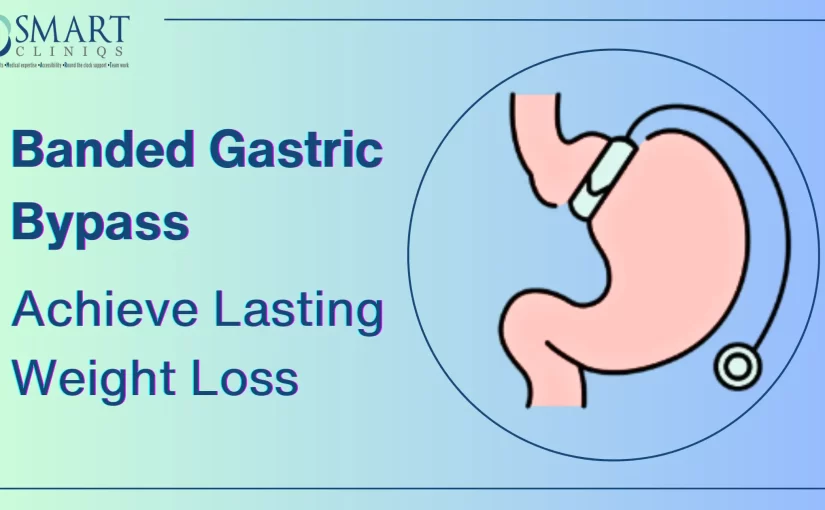
Banded Gastric Bypass Achieve Lasting Weight Loss
Read More
Examining the Pros and Cons of Bariatric Surgery
Read MoreHow Mini Gastric Bypass Surgery Can Transform Your Health and Lifestyle
Read More
Understanding the Causes of Obesity in Children and Adolescents
Read MoreReflux Reimagined: Innovative Approaches to Acid Relief
Read MoreUnderstanding Gallbladder Surgery: A Surgeon’s Perspective
Read MorePost-Bariatric Sip Navigating a Caffeine-Free & Fizz-Free Lifestyle
Read MoreFamily Support is of Prime Importance Post-Bariatric Surgery
Read More
Bariatric-Friendly Kitchen Gadgets to Help Achieve Health Goals
Read More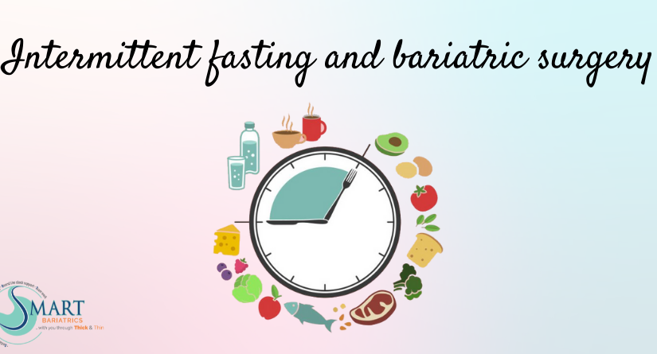
Bariatric-Vitamins vs Over the Counter Vitamins
Read MoreCalories Goals and Diet Behaviour after Bariatric Surgery
Read MoreAre protein supplements needed in long term too after bariatric surgery
Read More
Vitamin D Deficiency Before and After Bariatric Surgery
Read MoreWhy Exercise is Vital Before and After Bariatric Surgery?
Read MoreManagement of Pregnancy after Bariatric Surgery
Read MoreCOVID-19 Pandemic: Increase risk factors for childhood obesity
Read More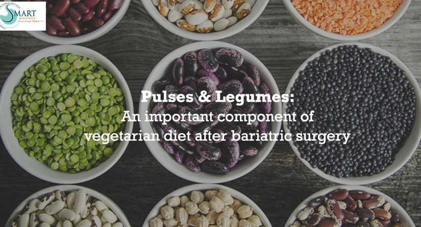
Pulses & Legumes: An important component of vegetarian diet after bariatric surgery
Read More
Precautions After Bariatric Surgery During Covid Times
Read MoreIs It Safe to Undergo Bariatric Surgery During the Covid Times?
Read More
Severe Protein Energy Malnutrition (PEM) after Bariatric Surgery
Read MoreIs it Necessary to Treat Gall Bladder Stones by Surgery?
Read MoreWhich Protein is Best After Bariatric Surgery?
Read More
Why Gradual Diet Progression is Advised After Bariatric Surgery
Read MoreYour Workplace Can Play an Important Role in Controlling Obesity
Read More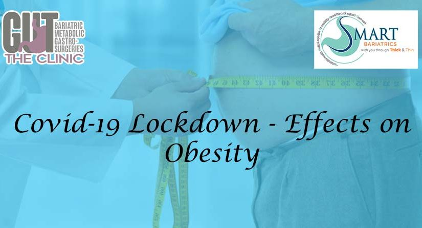
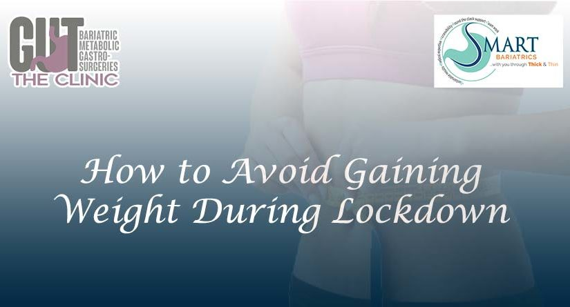

Management of Diabetes after Bariatric Surgery
Read More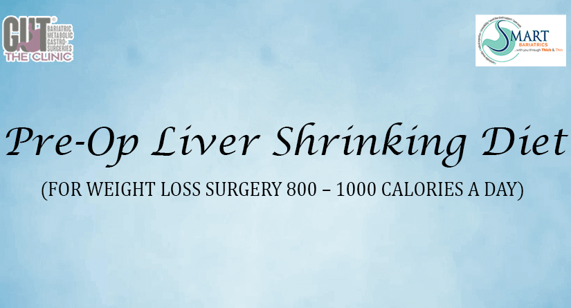
Top Tips For Success After Weight Loss Surgery
Read MoreWhat is Bariatric Surgery? Risk, Complications, and Side Effects
Read More

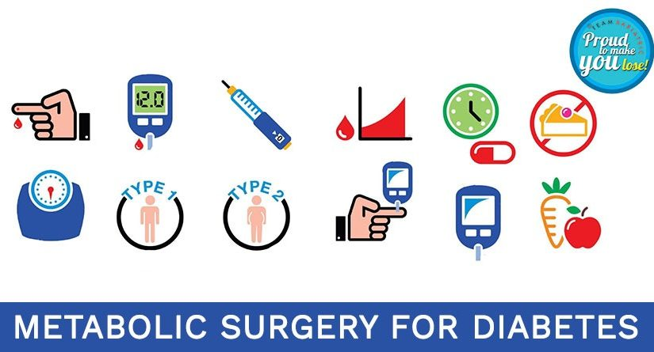
Behavioural Disorders in Obese: Important to Evaluate before WLS
Read More

Bariatric and Metabolic Surgery Centre: Essential Components
Read More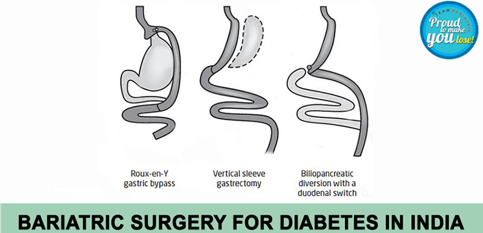
Management of Diabetes After Bariatric Surgery
Read More
Diabetes Mellitus Type 2 – The Permanent solution
Read More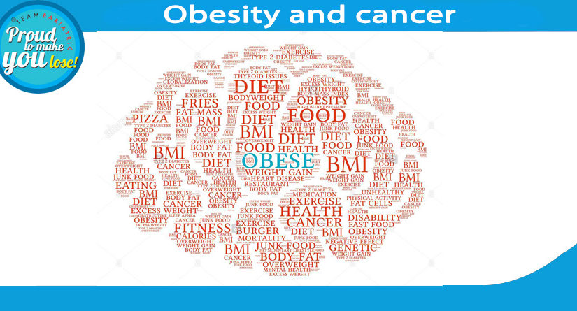
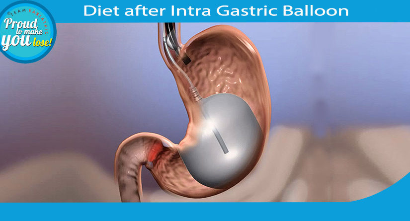
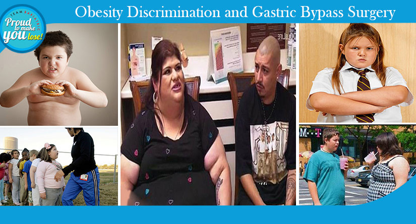
Obesity Discrimination and Gastric Bypass Surgery
Read More

Obstructive Sleep Apnoea…..Less Known or Ignorant
Read MoreBariatric Surgery Lowers the Risk of Heart Attack
Read More
English Muffins Are One Of Our Favorite Breakfast Option
Read MoreSurgery for Diabetes- Lets talk about Cure and not control
Read More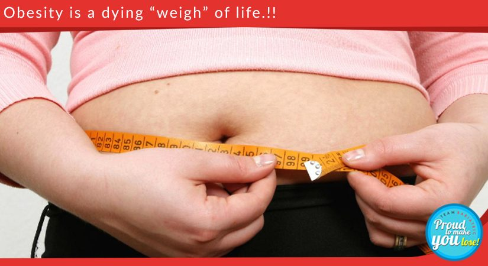
Have a question after reading? Book a consultation with Dr. Atul Peters and get personalized answers for your unique situation.